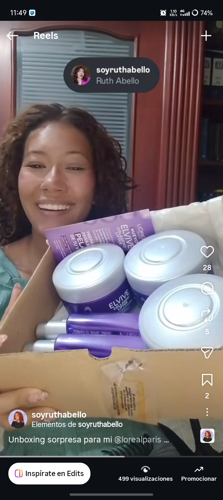
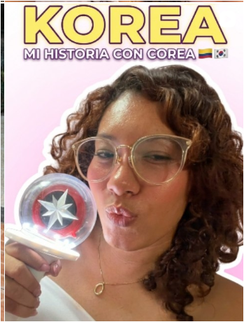
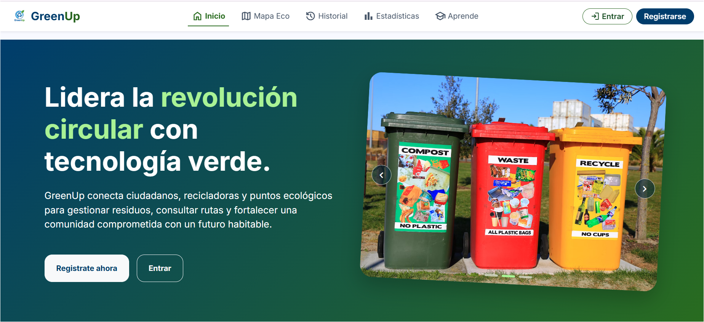

Ingeniería & Crecimiento
Desarrollo web, hábitos y tecnología. Comparto aprendizajes y código mientras construyo mi camino en ingeniería.
Código en GitHub ↗01Creada con propósito
Creadora de Contenido UGC Estudiante de Ingeniería de Sistemas / Desarrolladora Web
📍 Valledupar, Colombia 🇨🇴
Soy Ruth: una mente curiosa que disfruta tanto resolver problemas como contar historias.
Estudio Ingeniería de Sistemas y desarrollo proyectos web, compartiendo también mi código en GitHub. Fuera de la tecnología, soy lectora y disfruto crear reseñas literarias para BookTok, explorar la cultura coreana y compartir momentos de mi vida cotidiana. Mi fe cristiana inspira mi camino y mi forma de crear, guiada por el ejemplo de Proverbios 31.
Explora mis proyectos en GitHubTres mundos que se encuentran en cada historia.
Desarrollo web, hábitos y tecnología. Comparto aprendizajes y código mientras construyo mi camino en ingeniería.
Código en GitHub ↗01Reseñas literarias para editoriales y lectores: fantasía, romance y conversaciones sobre historias inolvidables.
02K-Influencer Academy 2026, vlogs, cultura coreana y cuidados para cabello rizado.
03Contenido creativo y soluciones digitales con una historia detrás.

Campaña UGC con unboxing y cuidado para cabello rizado.
Ver Reel de la Campaña
Creadora oficial en misiones de cultura coreana y narrativa.
Ver Playlist Oficial
Proyecto universitario full-stack de desarrollo de software y plataforma web.
Ver Repositorio en GitHubConecto marcas e ideas con una comunidad que valora las recomendaciones honestas y las historias cotidianas.
Hablemos de una colaboración ↗Reels y TikToks con una voz natural, cercana y alineada con tu marca.
Reseñas y recomendaciones de libros para conectar con lectores.
Colaboraciones con contexto dentro de mis vlogs semanales.